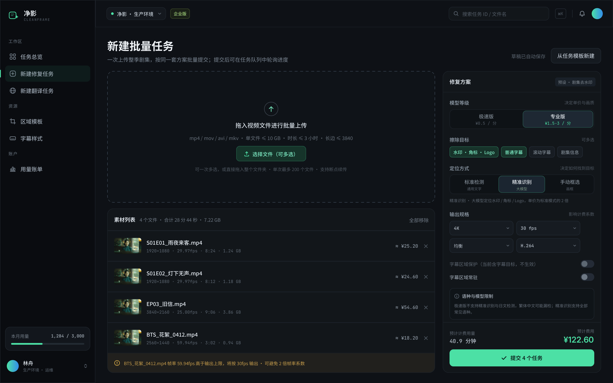
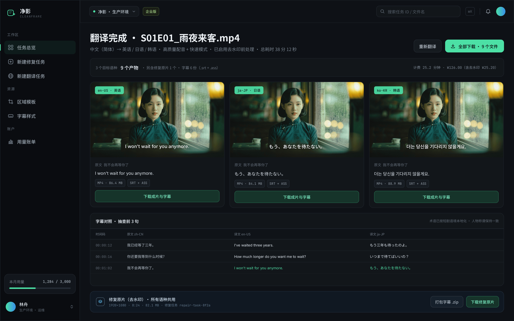

短剧出海
整季去硬字幕 + 多语配音发行
批量擦除国内平台角标、集数信息与中文硬字幕，保留人物情感与音色复刻英/日/韩/西语配音，直接烧录海外发行字幕。
推荐：先去水印（专业精准）→ 高质量配音 + 动态时长
本地批量上传整季短剧、课程或宣传片，一套方案统一擦除角标、台标与硬字幕，按需复刻原说话人音色并烧录多语字幕——告别逐集遮罩和反复导出，当天即可全球分发。
不需要写脚本或逐条调接口，把整季原始视频拖进工作台，一次提交即可完成去水印和多语种成片产出。
既能作为独立的批量去水印与字幕清洗工具使用，也能作为多语种翻译的前处理步骤自动串联，一次交付干净的海外发行成片。
把底层五种检测模式抽象为直观的「擦除目标 + 定位方式」组合，既能全自动清掉动态水印、Logo、滚动字幕与剧集信息，也能手动画框精确控制每一秒。


勾选「先去水印再翻译」，工作台会自动先生成无字幕洁净底片，再并行渲染英、日、韩、西、印尼等 31 种目标语言的配音视频与多格式字幕。
覆盖短剧出海、企业培训本地化与跨境营销素材治理，把繁琐的后期清洗和配音变成标准化流水线。
批量擦除国内平台角标、集数信息与中文硬字幕，保留人物情感与音色复刻英/日/韩/西语配音，直接烧录海外发行字幕。
支持单文件长达 3–4 小时的课程与内训录像，批量擦除旧机构 Logo 并输出多国语言配音与标准 .vtt / .srt 字幕轨。
快速清洗历史爆款广告片的旧水印与活动字幕，15 秒至 3 分钟竖版视频 1:4 极速出片，迅速测试东南亚、拉美与欧美市场。
视频修复仅重绘干扰像素区域，原音轨与环境背景音零损保留；翻译模式自动分离人声与 BGM。
对 50/60fps 源片开启 30fps 输出上限，工作台自动提示规避 2 倍帧率计费系数，立省一半成本。
阿拉伯语、日语、韩语、泰语、希伯来语等自动匹配合规字库（NotoSans / Pretendard / Cairo），无方块乱码。
同一部剧的角标与字幕位置只需标一次，保存模板后一键套用到整季上百集，彻底避免动态漏检。
无需配置云桶或编写接口代码，直接从电脑拖入多文件即可开跑，支持断点续传与 24h–72h 预签名下载。
按量出账无月费门槛，工作台逐文件展示预估分钟与费用，运行中面板同步累计已产生金额。
无包年套餐绑定，按实际处理分钟数每小时出账。拖动右侧试算器，提前看清整批视频的预估成本。
帧率系数：≤24fps 为 0.8，24–30fps 为 1.0，高于 30fps 按 ⌈帧率/30⌉ 折算（开启 30fps 上限可锁定系数 1.0）。
若开启「先去水印再翻译」，修复原片仅生成一次并按视频修复单价另计，所有目标语种共用同一份干净母带。
关于批量上传、计费折算规则、画质档位与成片下载有效期的常见说明。